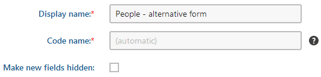
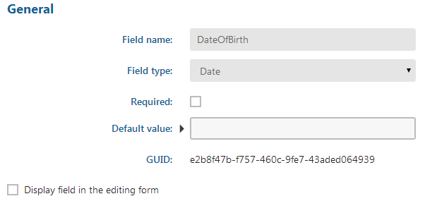
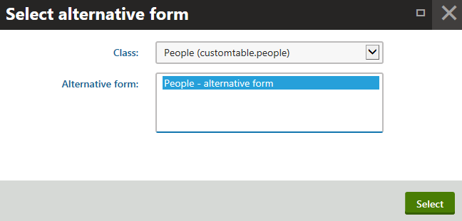
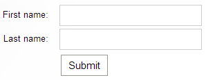

Creating alternative editing forms for custom tables
The alternative forms allow you to create alternative representations of existing forms, which you can then use in different situations. You can find more information in Creating alternative forms. In Code names of automatically used alternative forms, you can learn about special code names of alternative forms. If you create an alternative form with one of these names, it will be used automatically in the given situation.
The following example demonstrates how to create an alternative form for the People custom table created according to the instructions in Creating custom tables. You can apply the same procedure to any other custom table.
Adding the alternative form
Imagine, you want to collect data from the site visitors into this custom table, but you do not need their date of birth. For this purpose, you can create an alternative form, where you will disable the DateOfBirth field.
Open the Custom tables application.
Edit (
 ) the People custom table.
) the People custom table.Switch to the Alternative forms tab.
Click Create new form.
Type a Display name for the form.

Creating an alternative form for a custom tableClick Save.
The system creates a new alternative form for the custom table.
Configuring the alternative form fields
After you create an alternative form, you can change its fields using the field editor.
Switch to the Fields tab.
Select the DateOfBirth field.
Disable the Display field in the editing form option.
Instead of hiding the field, you can experiment with different settings of the field. Try changing the Form control type or the Field caption, or try changing the Editing control settings. This way, you can configure the alternative form as you wish.

Disabling a field in an alternative formClick Save.
You have configured the fields of the alternative form.
Displaying the alternative form on the live site
Now you can display this custom table on the website using the alternative form. You can use the Custom table form web part.
Open the Pages application.
Switch to the Design tab.
Place the Custom table form web part on a page.
Configure the web part.
Click Select next to the Alternative form name property.
The alternative form takes precedence over the selected custom table.
Choose the class and alternative form in the displayed dialog and click Select.

Selecting an alternative formClick Save & Close.
The alternative form appears on the page (without the DateOfBirth field). Users can submit the form to add new records to the custom table.
